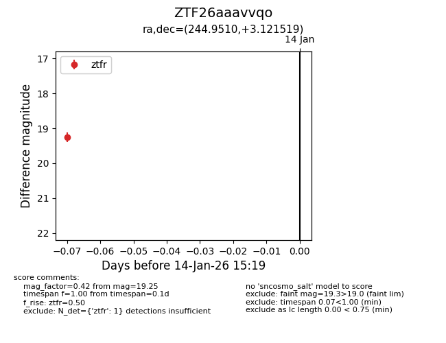
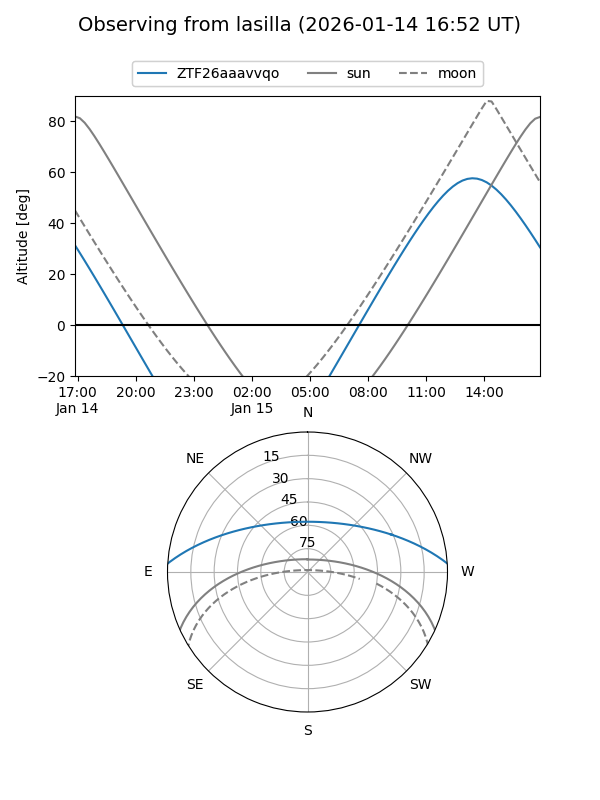
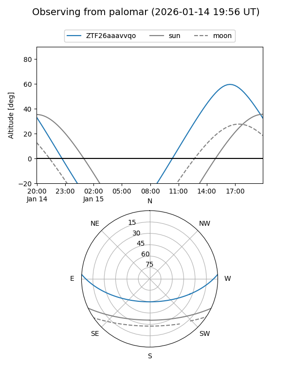

ZTF26aaavvqo
Target ZTF26aaavvqo at 2026-01-14 15:20
Aliases and brokers:
FINK: link
Lasair: link
ALeRCE: link
alt names
ZTF26aaavvqo (ztf,fink_ztf)
Coordinates:
equatorial (ra, dec) = 244.9510,+3.12152
equatorial (HMS+DMS) = 16:19:48.25,+03:07:17.47
galactic (l, b) = (16.5715,+34.80804)
Flags:
Photometry:
last ztfr=19.25
1 ztfr detections
Lightcurve

Visibility


Additional plots